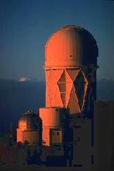
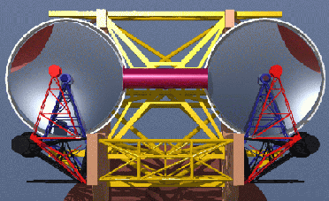
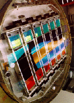

|  |  |  |
Syllabus |
Announcements |
Schedule |
Lectures |
||
Problem Sets |
Labs |
Obs. Calendar |
USNO Data |
Weather |
Web Links |
IDL Resources |
||
ASTR 511 IDL Tutorial |
| Office | |||
|---|---|---|---|
| Instructor | Robert O'Connell | Astronomy 251B | rwo |
| TA | Peter Frinchaboy | Astronomy 220 | pmf8b |
| 40-in Imaging Support |
David McDavid | Astronomy 210 | dam3ma |
| 40-in Spectroscopy Support |
Jeff Crane | Astronomy 222 | jdc2k |
| Department Phone: | 924-7494 |
| LMO Phone: | 924-7080 |
| Fan 40-in Phone: | 979-0685 |
| Fan Computer Phone: | 979-0686 |
| 121/130 Observing Message: | 924-7238 |